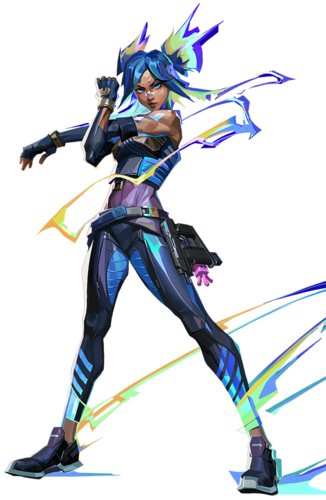
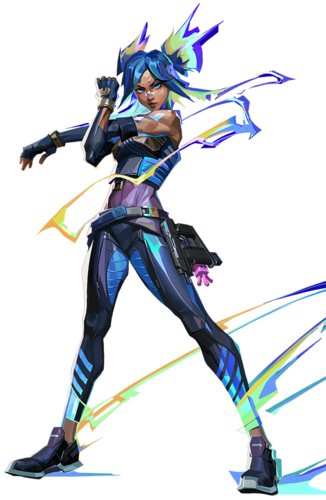
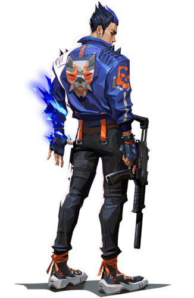
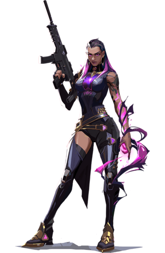
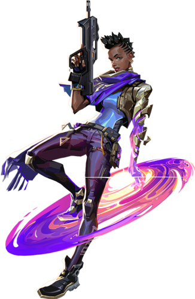
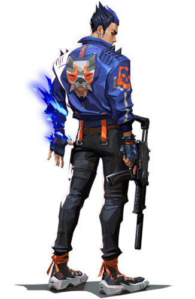
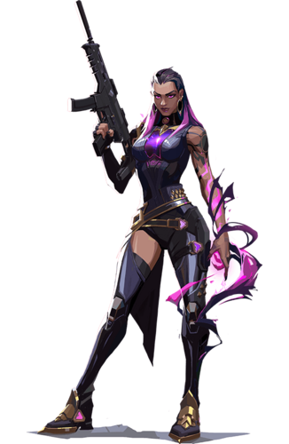
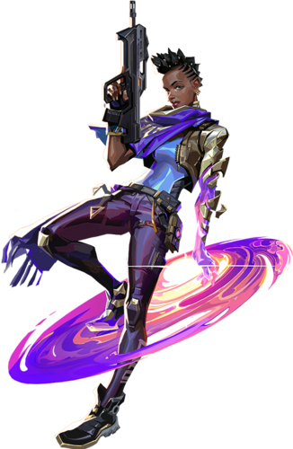
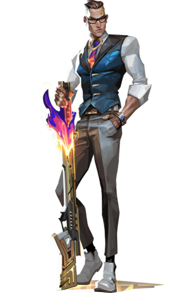
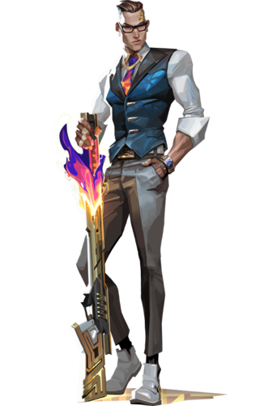

Characters that people can choose from. Into total the roster has 18 agents. 100 is the defualt amount of
hitpoints an agent has, however players can also purchase shields: light shields(+25) and heavy shields +50.
Each agent possess their own abilities. Three main ones, and one that is an ultimate ability. Main ones can
be purchased, but to unlock the ultimate ability, you would need to get a certain amount of kills. Additionally
these abilites also define what kind of class the agent is in. Classes fall into four cateogries: Controllers,
Duelists, Initiators, and Sentinels. Controllers are agents that have abilities to control a field to set up
their team for success. This can come in forms such as deployable smokes. Duelists are agents that are supposed
to enter sites and be aggresive as possible, as they are expected to get eliminations. Agents that fit in this
class often have abilities like flashes and fast movemenets. Initiators are agents whose role is to enter contested
grounds by pushing away defender. This can be done in numorous ways, for example providing vision on enemies.
Lastly, Sentinels are agents who can hold down sites as well as defend them through their gadgets or abilities.
For example, a turret that would defend a site.

 

 







 



Is an agent whose main role is to be fast and aggresive.
Her skill set includes the ability to dash any direction,
go up in the air, and throw smokes. Moreover, her passive
ability is the option to glide when in air. However, her
ultimate ability are knives which she can throw at players.
Additionally these knives deal 50 damage to the body and 150
to the head.
Agent who enters the site first (most of the time).
Skills include the flash the enemy, set up a wall of
fire, and throw a fireball. Passive ability is to heal
when affected by his fire. For example if he were to
stand on his fireball, then he would heal. Lastly,
his ultimate ability is to make a clone of himself
attack. If he were to die in his clone state then he
would respawn, with full health, in the place where
he activated the ultimate ability. However, this ability
also has a short duration, so respawning is inevitable.
Agent who is known to be fast and aggresive, like Jett,
but with a different skillset. It consists of fast running
& sliding, setting up a double wall, throwing an electric bolt
that deals a concussive effect. Her passive ability is charging
her running & slide ability by gathering the electricty around her
And her ultimate ability is a speed boost and a power to shoot
electric energy.
Is an agent whose whole playstyle is explosive/aggresive.
Her skills are throwing down exploding packets that can
boost raze into the air, a grenade, and a bot that explodes
when it detects an enemy. And her ultimate ability is a rocket
launcher (self explanatory).
Yoru is a duelist that is about decieving and strategy. His skill
set includes creating fake footstep noises, a throwing flash, and
an ability to teleport where he places his ability. However, this
ability has a cooldown. Lastly, his ultimate ability is entering
a dimension where he can't be affected or seen by enemies.
An agent that is all about eliminating enemies. Her abilities
consist of throwing an eye into the air that blinds the enemy and
an option to turn herself intangible or heal herself for a short
duration whenever she kills an enemy. Lastly, her ultimate ability
increases her weapon's statistics, as well as, an option to become
both intangbile and have constant healing for a short duration,
whenever she kills an enemy.
Astra is an agent that has the ability to manipulate
the whole map. Astra's abilities inlcudes placing a
magic ball anywhere on the map. The magic balls can
either create a vortex that pulls in an agent, or consuss
an agent, or create smoke in a form of a large sphere.
Lastly her ultimare ability is creating a huge wall that
cover the whole map. The wall itself creates a noise barrier,
as well as doesn't allow vision or bullets to pass through.
An agent that involves in setting up his team for success.
His abilities are a stim beacon that increase a person's
fire rate, smoke bombs, and a molotov like launcher. And
his ultimate ability is the option to throw a beam of fire
anywhere on the map.
Omen is an agent that hunts from shadows. His normal
abilities inlcude a sphere that omen can throw. The
sphere can traverse through any objects and if an enemy
gets hit by it then their sight would turn dark. Continuing,
he can also set up smokes, and the ability to teleport within
a certain distance. Lastly, his ultimate ability is to teleport
anywhere on the map.
Viper is an agent that sets the stage on sites. Her abilities
consist of setting up a toxic wall (which people can still go
through), a venomous type grenade, and a toxic sphere that people
cannot see through. Her ultimate ability is creating a large cloud
of toxic substance that settles on the same spot as her.
Sova is the eyes of the team. His skill roster includes an owl drone
that can shoot a dart with a tracker on it, an arrow that can scan
its surroundings, and a arrow that can creates an electric sphere
that deals 90 damage. Lastly, his ultimate ability is an energy blast
that has a large range. Additionally, if hit by that energy blast, enemies
are slowed down and lose 80 health.
Breach is the agent that makes it easier for his teammates
to push in. His skills are a device that flashes people on
the other side of any wall, a device that creates burst of
explosives on the other side of any wall, and a sesmic blast
that concusses enemies. Lastly, his ultimate skill is an earthquake
that can cover the whole site. If hit by it then you are slowed
down and expirience dizziness.
KAY/O is a very basic agent. His abilities are a flashbang,
a grenade, and a knife that creates a field where if hit by
it then a person wouldn't be able to use his/her abilities.
Lastly, his ultimate is him emitting an energy wave that has
the same effect as his knife.
Is an agent who is one with nature. Her skill roster consists
of a bird that blinds enemies, a fox that can scout an area, and
the ability to create a field around herself that can heal her
teammates. Skye's ultimate ability are wolves that can track
enemies.
An assissin who goes by the name of Deadeye. His abilities
are traps that scan for enemies and when it detects one it
slows down the enemy. A heavy pistol that is a lot like the
sheriff, and to teleport between two objects, which he has to
place. Lastly, his ultimate ability is a sniper that instantly
kills an enemy. Additioanlly, once hit by it, the enemy also
creates a field around him that can slow down the agents.
Cypher can be considered the strategist of the game. His
abilities consist of wired traps, a trap that makes a traversable
cylinder, which also makes noise when someone goes through it.
And his third ability is a spycam that he can place anywhere
(walls, floor, ceiling, etc.). His ultimate ability is the option
to find everyone's location once he kills an enemy.
Agent that specializes in gadgets. Her abilities are
deployable turrets, traps that create a swarm of little
objects which heavily reduce an agent's health, and an alarmbot
that explodes when it detects an enemy, however, the
alarmbot only makes the enemy vulnerable. Which makes
the enemy recieve double the damage from anything. Lastly,
her ultimate skill is a device that can create a huge field
that can cover a whole site. And if enemies are still in that
field when the timer reaches zero, then they would become detained.
Which basically, doesn't allow enemies to shoot nor move fast.
Sage is one of the best support agents. Her kit includes
the ability to create a non-traversable wall, a crysta ball
that spreads when it hits the ground, and if enemies are on it
then they are slowed down. Her third ability is regenerating her
own or teammates health. Lastly, her ultimate ability is the
option to bring an agent back from death.